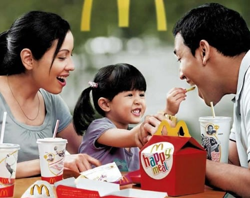

McDonald's
The McDonald's Corporation is the world's largest chain of hamburger fast food restaurants, serving around 68 million customers daily in 119 countries across 35,000 outlets. Headquartered in the United States, the company began in 1940 as a barbecue restaurant operated by Richard and Maurice McDonald; in 1948 they reorganized their business as a hamburger stand using production line principles. Businessman Ray Kroc joined the company as a franchise agent in 1955. He subsequently purchased the chain from the McDonald brothers and oversaw its worldwide growth.
A McDonald's restaurant is operated by either a franchisee, an affiliate, or the corporation itself. McDonald's Corporation revenues come from the rent, royalties, and fees paid by the franchisees, as well as sales in company-operated restaurants. In 2012, McDonald's Corporation had annual revenues of $27.5 billion, and profits of $5.5 billion.
McDonald's primarily sells hamburgers, cheeseburgers, chicken, french fries, breakfast items, soft drinks, milkshakes, and desserts.
In response to changing consumer tastes, the company has expanded its menu to include salads, fish, wraps, smoothies, fruit, and seasoned fries.The business began in 1940, with a restaurant opened by brothers Richard and Maurice McDonald at 1398 North E Street at West 14th Street in San Bernardino, California (at 34.1255°N 117.2946°W).
Their introduction of the "Speedee Service System" in 1948 furthered the principles of the modern fast-food restaurant that the White Castle hamburger chain had already put into practice more than two decades earlier. The original mascot of McDonald's was a man with a chef's hat on top of a hamburger-shaped head whose name was "Speedee". Speedee was eventually replaced with Ronald McDonald by 1967 when the company first filed a U.S. trademark on a clown-shaped man having puffed-out costume legs.
McDonald's first filed for a U.S. trademark on the name "McDonald's" on May 4, 1961, with the description "Drive-In Restaurant Services", which continues to be renewed through the end of December 2009. In the same year, on September 13, 1961, the company filed a logo trademark on an overlapping, double-arched "M" symbol. The overlapping double-arched "M" symbol logo was temporarily disfavored[clarification needed] by September 6, 1962, when a trademark was filed for a single arch, shaped over many of the early McDonald's restaurants in the
early years. Although the "Golden Arches" appeared in various forms, the present form as a letter "M" did not appear until November 18, 1968, when the company applied for a U.S. trademark.
The business began in 1940, with a restaurant opened by brothers Richard and Maurice McDonald at 1398 North E Street at West 14th Street in San Bernardino, California (at 34.1255°N 117.2946°W).

Their introduction of the "Speedee Service System" in 1948 furthered the principles of the modern fast-food restaurant that the White Castle hamburger chain had already put into practice more than two decades earlier. The original mascot of McDonald's was a man with a chef's hat on top of a hamburger-shaped head whose name was "Speedee". Speedee was eventually replaced with Ronald McDonald by 1967 when the company first filed a U.S. trademark on a clown-shaped man having puffed-out costume legs.
McDonald's first filed for a U.S. trademark on the name "McDonald's" on May 4, 1961, with the description "Drive-In Restaurant Services", which continues to be renewed through the end of December 2009. In the same year, on September 13, 1961, the company filed a logo trademark on an overlapping, double-arched "M" symbol. The overlapping double-arched "M" symbol logo was temporarily disfavored[clarification needed] by September 6, 1962, when a trademark was filed for a single arch, shaped over many of the early McDonald's restaurants in the early years. Although the "Golden Arches" appeared in various forms, the present form as a letter "M" did not appear until November 18, 1968, when the company applied for a U.S. trademark.
The present corporation dates its founding to the opening of a franchised restaurant by Czech American businessman Ray Kroc, in Des Plaines, Illinois, on April 15, 1955, the ninth McDonald's restaurant overall. Kroc later purchased the McDonald brothers' equity in the company and led its worldwide expansion, and the company became listed on the public stock markets in 1965. Kroc was also noted for aggressive business practices, compelling the McDonald brothers to leave the fast food industry. The McDonald brothers and Kroc feuded over control of the business, as documented in both Kroc's autobiography and in the McDonald brothers' autobiography. The San Bernardino store was demolished in 1976 (or 1971, according to Juan Pollo) and the site was sold to the Juan Pollo restaurant chain. It now serves as headquarters for the Juan Pollo chain, as well as a McDonald's and Route 66 museum.[12] With the expansion of McDonald's into many international markets, the company has become a symbol of globalization and the spread of the American way of life. Its prominence has also made it a frequent topic of public debates about obesity, corporate ethics and consumer responsibility.